| ✅ | ✅ | ✅ | ✅ | ✅ | ✅ |
|---|
Motors with rotation sensors¶

Figure 2 Powered Up motors with rotation sensors. The arrows indicate the default
positive direction. See the hubs module for default
directions of built-in motors.¶
- class Motor(port, positive_direction=Direction.CLOCKWISE, gears=None, reset_angle=True, profile=None)¶
LEGO® Powered Up motor with rotation sensors.
- Parameters:
port (Port) – Port to which the motor is connected.
positive_direction (Direction) – Which direction the motor should turn when you give a positive speed value or angle.
gears (list) –
List of gears linked to the motor.
For example:
[12, 36]represents a gear train with a 12-tooth and a 36-tooth gear. Use a list of lists for multiple gear trains, such as[[12, 36], [20, 16, 40]].When you specify a gear train, all motor commands and settings are automatically adjusted to account for the resulting gear ratio. The motor direction remains unchanged by this.
reset_angle (bool) – Choose
Trueto reset the rotation sensor value to the absolute marker angle (between -180 and 179). ChooseFalseto keep the current value, so your program knows where it left off last time.profile (Number, deg) – Precision profile. This is the approximate position tolerance in degrees that is acceptable in your application. A lower value gives more precise but more erratic movement; a higher value gives less precise but smoother movement. If no value is given, a suitable profile for this motor type will be selected automatically (about 11 degrees).
Measuring
- angle() int: deg¶
Gets the rotation angle of the motor.
- Returns:
Motor angle.
- reset_angle(angle=None)¶
Sets the accumulated rotation angle of the motor to a desired value.
If you don’t specify an angle, the absolute angle will be used if your motor supports it.
- Parameters:
angle (Number, deg) – Value to which the angle should be reset.
- speed(window=100) int: deg/s¶
Gets the speed of the motor.
The speed is measured as the change in the motor angle during the given time window. A short window makes the speed value more responsive to motor movement, but less steady. A long window makes the speed value less responsive, but more steady.
- Parameters:
window (Number, ms) – The time window used to determine the speed.
- Returns:
Motor speed.
- load() int: mNm¶
Estimates the load that holds back the motor when it tries to move.
- Returns:
The load torque.
- stalled() bool¶
Checks if the motor is currently stalled.
It is stalled when it cannot reach the target speed or position, even with the maximum actuation signal.
- Returns:
Trueif the motor is stalled,Falseif not.
Stopping
- stop()¶
Stops the motor and lets it spin freely.
The motor gradually stops due to friction.
- brake()¶
Passively brakes the motor.
The motor stops due to friction, plus the voltage that is generated while the motor is still moving.
- hold()¶
Stops the motor and actively holds it at its current angle.
Running forever
- run(speed)¶
Runs the motor at a constant speed.
The motor accelerates to the given speed and keeps running at this speed until you give a new command.
- Parameters:
speed (Number, deg/s) – Speed of the motor.

- dc(duty)¶
Rotates the motor at a given duty cycle (also known as “power”).
- Parameters:
duty (Number, %) – The duty cycle (-100.0 to 100).
Running by a fixed amount
- awaitrun_time(speed, time, then=Stop.HOLD, wait=True)¶
Runs the motor at a constant speed for a given amount of time.
The motor accelerates to the given speed, keeps running at this speed, and then decelerates. The total maneuver lasts for exactly the given amount of
time.
- awaitrun_angle(speed, rotation_angle, then=Stop.HOLD, wait=True)¶
Runs the motor at a constant speed by a given angle.

- awaitrun_target(speed, target_angle, then=Stop.HOLD, wait=True)¶
Runs the motor at a constant speed towards a given target angle.
The direction of rotation is automatically selected based on the target angle. It does not matter if
speedis positive or negative.
- awaitrun_until_stalled(speed, then=Stop.COAST, duty_limit=None) int: deg¶
Runs the motor at a constant speed until it stalls.
- Parameters:
speed (Number, deg/s) – Speed of the motor.
then (Stop) – What to do after coming to a standstill.
duty_limit (Number, %) – Duty cycle limit during this command. This is useful to avoid applying the full motor torque to a geared or lever mechanism. If it is
None, the duty limit won’t be changed during this command.
- Returns:
Angle at which the motor becomes stalled.
- track_target(target_angle)¶
Tracks a target angle. This is similar to
run_target(), but the usual smooth acceleration is skipped: it will move to the target angle as fast as possible. This method is useful if you want to continuously change the target angle.- Parameters:
target_angle (Number, deg) – Target angle that the motor should rotate to.
- done() bool¶
Checks if an ongoing command or maneuver is done.
- Returns:
Trueif the command is done,Falseif not.
Motor settings
- settings(max_voltage)¶
- settings() Tuple[int]
Configures motor settings. If no arguments are given, this returns the current values.
- Parameters:
max_voltage (Number, mV) – Maximum voltage applied to the motor during all motor commands.
- close()¶
Closes the motor object so you can call
Motoragain to initialize a new object.This allows advanced users to change properties such as gearing in the middle of the program, which can be useful for removeable attachments.
Control settings
❌ ✅ ✅ ✅ ✅ ✅ - control.limits(speed, acceleration, torque)¶
- control.limits() Tuple[int, int, int]
Configures the maximum speed, acceleration, and torque.
If no arguments are given, this will return the current values.
The new
accelerationandspeedlimit will become effective when you give a new motor command. Ongoing maneuvers are not affected.- Parameters:
speed (Number, deg/s or Number, mm/s) – Maximum speed. All speed commands will be capped to this value.
acceleration (Number, deg/s² or Number, mm/s²) – Slope of the speed curve when accelerating or decelerating. Use a tuple to set acceleration and deceleration separately. If one value is given, it is used for both.
torque (torque: mNm) – Maximum feedback torque during control.
❌ ✅ ✅ ✅ ✅ ✅ - control.pid(kp, ki, kd, integral_deadzone, integral_rate)¶
- control.pid() Tuple[int, int, int, int, int]
Gets or sets the PID values for position and speed control.
If no arguments are given, this will return the current values.
- Parameters:
kp (int) – Proportional position control constant. It is the feedback torque per degree of error: µNm/deg.
ki (int) – Integral position control constant. It is the feedback torque per accumulated degree of error: µNm/(deg s).
kd (int) – Derivative position (or proportional speed) control constant. It is the feedback torque per unit of speed: µNm/(deg/s).
integral_deadzone (Number, deg or Number, mm) – Zone around the target where the error integral does not accumulate errors.
integral_rate (Number, deg/s or Number, mm/s) – Maximum rate at which the error integral is allowed to grow.
❌ ✅ ✅ ✅ ✅ ✅ - control.target_tolerances(speed, position)¶
- control.target_tolerances() Tuple[int, int]
Gets or sets the tolerances that say when a maneuver is done.
If no arguments are given, this will return the current values.
- Parameters:
speed (Number, deg/s or Number, mm/s) – Allowed deviation from zero speed before motion is considered complete.
position (Number, deg or distance: mm) – Allowed deviation from the target before motion is considered complete.
❌ ✅ ✅ ✅ ✅ ✅ - control.stall_tolerances(speed, time)¶
- control.stall_tolerances() Tuple[int, int]
Gets or sets stalling tolerances.
If no arguments are given, this will return the current values.
❌ ✅ ✅ ✅ ✅ ✅ - control.scale¶
Number of degrees that the motor turns to complete one degree at the output of the gear train. This is the gear ratio determined from the
gearsargument when initializing the motor.
❌ ✅ ✅ ✅ ✅ ✅ - model.state() Tuple[float, float, float, bool]¶
Gets the estimated angle, speed, current, and stall state of the motor, using a simulation model that mimics the real motor. These estimates are updated faster than the real measurements, which can be useful when building your own PID controllers.
For most applications it is better to used the measured
angle,speed,load, andstallstate instead.- Returns:
Tuple with the estimated angle (deg), speed (deg/s), current (mA), and stall state (
TrueorFalse).
❌ ✅ ✅ ✅ ✅ ✅ - model.settings(values)¶
- model.settings() Tuple
Gets or sets model settings as a tuple of integers. If no arguments are given, this will return the current values. This method is mainly used to debug the motor model class. Changing these settings should not be needed in user programs.
- Parameters:
values (Tuple) – Tuple with model settings.
Initialization examples¶
Making the motor move back and forth¶
from pybricks.pupdevices import Motor
from pybricks.parameters import Port
from pybricks.tools import wait
# Initialize a motor on port A.
example_motor = Motor(Port.A)
# Make the motor run clockwise at 500 degrees per second.
example_motor.run(500)
# Wait for three seconds.
wait(3000)
# Make the motor run counterclockwise at 500 degrees per second.
example_motor.run(-500)
# Wait for three seconds.
wait(3000)
Initializing multiple motors¶
from pybricks.pupdevices import Motor
from pybricks.parameters import Port
from pybricks.tools import wait
# Initialize motors on port A and B.
track_motor = Motor(Port.A)
gripper_motor = Motor(Port.B)
# Make both motors run at 500 degrees per second.
track_motor.run(500)
gripper_motor.run(500)
# Wait for three seconds.
wait(3000)
Setting the positive direction as counterclockwise¶
from pybricks.pupdevices import Motor
from pybricks.parameters import Port, Direction
from pybricks.tools import wait
# Initialize a motor on port A with the positive direction as counterclockwise.
example_motor = Motor(Port.A, Direction.COUNTERCLOCKWISE)
# When we choose a positive speed value, the motor now goes counterclockwise.
example_motor.run(500)
# This is useful when your motor is mounted in reverse or upside down.
# By changing the positive direction, your script will be easier to read,
# because a positive value now makes your robot/mechanism go forward.
# Wait for three seconds.
wait(3000)
Using gears¶
from pybricks.pupdevices import Motor
from pybricks.parameters import Port, Direction
from pybricks.tools import wait
# Initialize a motor on port A with the positive direction as counterclockwise.
# Also specify one gear train with a 12-tooth and a 36-tooth gear. The 12-tooth
# gear is attached to the motor axle. The 36-tooth gear is at the output axle.
geared_motor = Motor(Port.A, Direction.COUNTERCLOCKWISE, [12, 36])
# Make the output axle run at 100 degrees per second. The motor speed
# is automatically increased to compensate for the gears.
geared_motor.run(100)
# Wait for three seconds.
wait(3000)
Measurement examples¶
Measuring the angle and speed¶
from pybricks.pupdevices import Motor
from pybricks.parameters import Port
from pybricks.tools import wait
# Initialize a motor on port A.
example_motor = Motor(Port.A)
# Start moving at 300 degrees per second.
example_motor.run(300)
# Display the angle and speed 50 times.
for i in range(100):
# Read the angle (degrees) and speed (degrees per second).
angle = example_motor.angle()
speed = example_motor.speed()
# Print the values.
print(angle, speed)
# Wait some time so we can read what is displayed.
wait(200)
Resetting the measured angle¶
from pybricks.pupdevices import Motor
from pybricks.parameters import Port
# Initialize a motor on port A.
example_motor = Motor(Port.A)
# Reset the angle to 0.
example_motor.reset_angle(0)
# Reset the angle to 1234.
example_motor.reset_angle(1234)
# Reset the angle to the absolute angle.
# This is only supported on motors that have
# an absolute encoder. For other motors, this
# will raise an error.
example_motor.reset_angle()
Getting the absolute angle¶
from pybricks.pupdevices import Motor
from pybricks.parameters import Port
from pybricks.tools import wait
# Initialize a motor on port A.
example_motor = Motor(Port.A)
while True:
# Get the default angle value.
angle = example_motor.angle()
# Get the angle between 0 and 360.
absolute_angle = example_motor.angle() % 360
# Get the angle between -180 and 179.
wrapped_angle = (example_motor.angle() + 180) % 360 - 180
# Print the results.
print(angle, absolute_angle, wrapped_angle)
wait(100)
Movement examples¶
Basic usage of all run methods¶
from pybricks.pupdevices import Motor
from pybricks.parameters import Port
from pybricks.tools import wait
# Initialize a motor on port A.
example_motor = Motor(Port.A)
# Run at 500 deg/s and then stop by coasting.
print("Demo of run")
example_motor.run(500)
wait(1500)
example_motor.stop()
wait(1500)
# Run at 70% duty cycle ("power") and then stop by coasting.
print("Demo of dc")
example_motor.dc(50)
wait(1500)
example_motor.stop()
wait(1500)
# Run at 500 deg/s for two seconds.
print("Demo of run_time")
example_motor.run_time(500, 2000)
wait(1500)
# Run at 500 deg/s for 90 degrees.
print("Demo of run_angle")
example_motor.run_angle(500, 90)
wait(1500)
# Run at 500 deg/s back to the 0 angle
print("Demo of run_target to 0")
example_motor.run_target(500, 0)
wait(1500)
# Run at 500 deg/s back to the -90 angle
print("Demo of run_target to -90")
example_motor.run_target(500, -90)
wait(1500)
# Run at 500 deg/s until the motor stalls
print("Demo of run_until_stalled")
example_motor.run_until_stalled(500)
print("Done")
wait(1500)
Stopping ongoing movements in different ways¶
from pybricks.pupdevices import Motor
from pybricks.parameters import Port
from pybricks.tools import wait
# Initialize a motor on port A.
example_motor = Motor(Port.A)
# Run at 500 deg/s and then stop by coasting.
example_motor.run(500)
wait(1500)
example_motor.stop()
wait(1500)
# Run at 500 deg/s and then stop by braking.
example_motor.run(500)
wait(1500)
example_motor.brake()
wait(1500)
# Run at 500 deg/s and then stop by holding.
example_motor.run(500)
wait(1500)
example_motor.hold()
wait(1500)
# Run at 500 deg/s and then stop by running at 0 speed.
example_motor.run(500)
wait(1500)
example_motor.run(0)
wait(1500)
Using the then argument to change how a run command stops¶
from pybricks.pupdevices import Motor
from pybricks.parameters import Port, Stop
from pybricks.tools import wait
# Initialize a motor on port A.
example_motor = Motor(Port.A)
# By default, the motor holds the position. It keeps
# correcting the angle if you move it.
example_motor.run_angle(500, 360)
wait(1000)
# This does exactly the same as above.
example_motor.run_angle(500, 360, then=Stop.HOLD)
wait(1000)
# You can also brake. This applies some resistance
# but the motor does not move back if you move it.
example_motor.run_angle(500, 360, then=Stop.BRAKE)
wait(1000)
# This makes the motor coast freely after it stops.
example_motor.run_angle(500, 360, then=Stop.COAST)
wait(1000)
Stall examples¶
Running a motor until a mechanical endpoint¶
from pybricks.pupdevices import Motor
from pybricks.parameters import Port
# Initialize a motor on port A.
example_motor = Motor(Port.A)
# We'll use a speed of 200 deg/s in all our commands.
speed = 200
# Run the motor in reverse until it hits a mechanical stop.
# The duty_limit=30 setting means that it will apply only 30%
# of the maximum torque against the mechanical stop. This way,
# you don't push against it with too much force.
example_motor.run_until_stalled(-speed, duty_limit=30)
# Reset the angle to 0. Now whenever the angle is 0, you know
# that it has reached the mechanical endpoint.
example_motor.reset_angle(0)
# Now make the motor go back and forth in a loop.
# This will now work the same regardless of the
# initial motor angle, because we always start
# from the mechanical endpoint.
for count in range(10):
example_motor.run_target(speed, 180)
example_motor.run_target(speed, 90)
Centering a steering mechanism¶
from pybricks.pupdevices import Motor
from pybricks.parameters import Port
from pybricks.tools import wait
# Initialize a motor on port A.
example_motor = Motor(Port.A)
# Please have a look at the previous example first. This example
# finds two endspoints and then makes the middle the zero point.
# The run_until_stalled gives us the angle at which it stalled.
# We want to know this value for both endpoints.
left_end = example_motor.run_until_stalled(-200, duty_limit=30)
right_end = example_motor.run_until_stalled(200, duty_limit=30)
# We have just moved to the rightmost endstop. So, we can reset
# this angle to be half the distance between the two endpoints.
# That way, the middle corresponds to 0 degrees.
example_motor.reset_angle((right_end - left_end) / 2)
# From now on we can simply run towards zero to reach the middle.
example_motor.run_target(200, 0)
wait(1000)
Parallel movement examples¶
Using the wait argument to run motors in parallel¶
from pybricks.pupdevices import Motor
from pybricks.parameters import Port
# Initialize motors on port A and B.
track_motor = Motor(Port.A)
gripper_motor = Motor(Port.B)
# Make the track motor start moving,
# but don't wait for it to finish.
track_motor.run_angle(500, 360, wait=False)
# Now make the gripper motor rotate. This
# means they move at the same time.
gripper_motor.run_angle(200, 720)
Waiting for two parallel actions to complete¶
from pybricks.pupdevices import Motor
from pybricks.parameters import Port
from pybricks.tools import wait
# Initialize motors on port A and B.
track_motor = Motor(Port.A)
gripper_motor = Motor(Port.B)
# Make both motors perform an action with wait=False
track_motor.run_angle(500, 360, wait=False)
gripper_motor.run_angle(200, 720, wait=False)
# While one or both of the motors are not done yet,
# do something else. In this example, just wait.
while not track_motor.done() or not gripper_motor.done():
wait(10)
print("Both motors are done!")